Clonar para borrar¶
La herramienta de clonado permite copiar una parte de la imagen y reproducirla en otra zona. Se utiliza para eliminar pequeños defectos, repetir texturas o corregir imperfecciones sin que el cambio se note.
Mientras que borrar elementos consiste en eliminar partes no deseadas de una imagen manteniendo un resultado limpio y natural. Para ello se combinan herramientas de borrado, selección y capas.
En este apartado aprenderás a clonar y eliminar objetos o zonas de una imagen con GIMP, cuidando el aspecto final de la fotografía.
Actividad
📝 AA5.8 Clonar para borrar¶
(C.ESP2 / CE2.3 / IC1-3p)
El objetivo de esta práctica es aprender a siluetear objetos o partes de la imagen para extraerlas y usarlas en otra imagen. Es un trabajo muy común que se utiliza a diario en cualquier revista de moda, alimentación, tecnología y por supuesto el sector del entretenimiento: videojuegos, memes, redes sociales, etc.
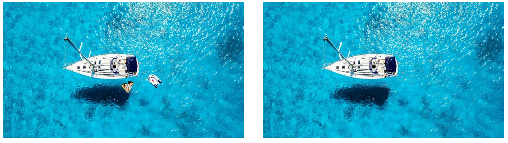
-
Buscar recursos
Busca en Internet una imagen que te guste y de la que quieras eliminar una parte. Ten cuidado eligiendo porque no siempre es posible obtener resultados realistas y el principal objetivo de esta tarea es que no se note que has tocado la imagen.
-
Abrir imagen
Abre el programa y desde el programa abre la imagen desde la que vas a recortar una parte, usando Archivo > Abrir. Busca en tu ordenador la imagen, selecciónala y pulsa en Abrir.
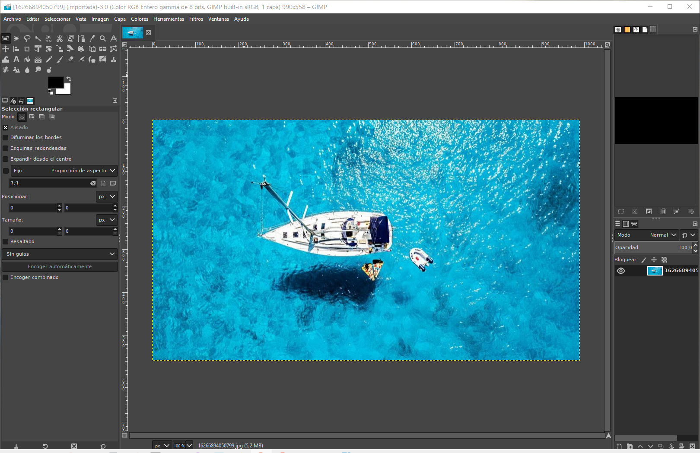
Abrir imagen En nuestro caso queremos eliminar todo lo que no es el barco, es decir, quitar de la foto tanto la embarcación hinchable como las dos colchonetas.
-
Acercar la imagen
Ahora has mucho zoom y sitúa en la parte central de la imagen aquella parte que desees eliminar.
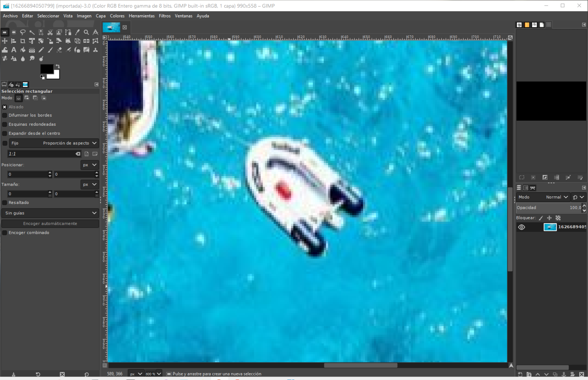
Acercar la imagen -
Herramienta de clonar
Ahora vamos a seleccionar la herramienta de selección libre que puedes encontrar en Herramientas > Herramientas de pinturas > clonar. El funcionamiento de esta herramienta es muy sencillo: tan solo tienes que pulsar la tecla CTRL, situar la herramienta sobre la zona que quieres clonar y hacer un solo clic, después suelta la tecla CTRL.
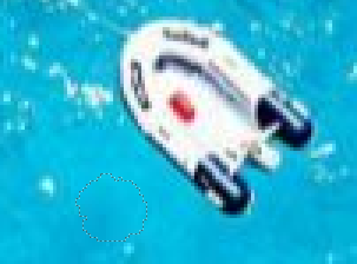
Herramienta de clonar Verás que ahora se ha quedado marcado un círculo donde hiciste clic. Esa parte de la imagen es la que se va a clonar cuando pintes con la herramienta. Ahora sólo tienes que ir clicando y moviendo la herramienta sobre la parte de la embarcación que quieres rellenar con la parte clonada. Lógicamente tendrás que ir cogiendo nuevas muestras según la parte de la imagen que estés clonando:
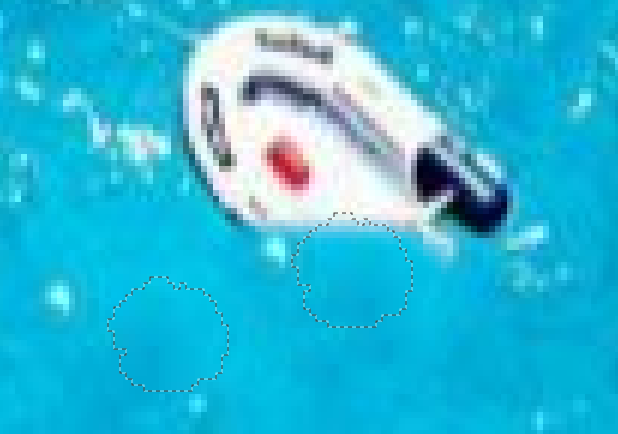
Herramienta de clonar El resto del trabajo es ir repitiendo el proceso de elegir zona a clonar y aplicar el clonado sobre la zona a borrar. Es buena idea ir de vez en cuando quitándo zoom, alejando la imagen para ver si el resultado que estás obteniendo es realista y poder arreglarlo en caso de que no esté quedando bien.
-
Exportar el resultado
Cuando creas que has obtenido un resultado de calidad, has terminado. Ve a Archivo > Exportar como y exporta el resultado de tu trabajo como
JPG. -
Cerrar el programa.
ACTIVIDAD
- Debes hacer este mismo proceso tres veces, cada vez con una imagen que tú elijas.
- Al finalizar el trabajo debes tener 6 imágenes: las 3 imágenes originales que has elegido y las tres que son el resultado de tu trabajo.
- Sube captura de pantalla del antes y después de las imágenes a Aules.
Actividad Refuerzo
🔨 AAR5.9 Fotomontajes¶
(C.ESP2 / CE2.3 / IC2-10p)
En esta práctica vamos a utilizar varias imágenes para componer la siguiente, mediante la utilización de diferentes capas.
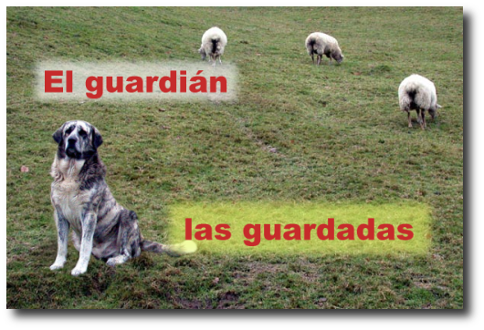
-
Abre los siguientes archivos en Gimp:
Las cuatro imágenes se muestran cada una en su Ventana imagen. Primero vas a trabajar con la imagen "ovejas.xcf", que la usarás de fondo para ir colocando en ella el resto de las imágenes.
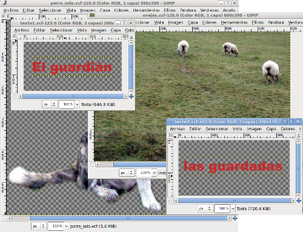
-
Minimiza todas las Ventanas imagen excepto las que contienen los archivos "ovejas.xcf" y "perro_solo.xcf".
-
Comienza por colocar la capa que contiene la imagen del perro dentro de la Ventana Imagen del archivo "ovejas.xcf", arrastrándola desde la Ventana Capas.
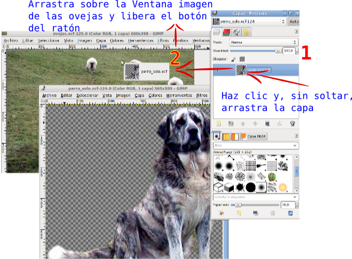
Una vez abierta la imagen del perro en la Ventana Imagen que contiene la imagen de las ovejas puedes observar que la capa del perro es muy grande en relación a la imagen de las ovejas.

- Renombra la capa "Copia de perro_solo" que se acaba de crear como "Perro". Con ella seleccionada, haz clic con el botón derecho del ratón sobre la paleta de Capas y elige Escalar capa, escribe 200 píxeles como valor de anchura y pulsa Aceptar. Comprueba que el perro ya cabe en la imagen.

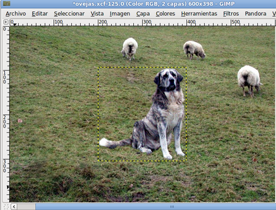
- Ahora vas a reflejar el perro, es decir, vas a poner el perro mirando hacia la izquierda para compensar un poco la imagen. Selecciona la herramienta de volteo en la Caja de herramientas y pon el puntero del ratón encima de la imagen del perro, después de haber comprobado en las Opciones de herramienta que tienes seleccionada la opción Horizontal, también hay que pulsar el primer botón situado al lado de la palabra Afectar para que actuemos sobre la capa "perro".

Haz clic sobre el perro y la capa que contiene al perro se refleja de forma horizontal.

- Mueve la capa que contiene al perro hasta colocarlo en el pequeño montículo que está debajo de él. Elige la herramienta Mover, haz clic en la Ventana imagen sobre el perro y, utilizando las flechas del teclado, mueve la capa hasta colocarla en el lugar correcto.

-
Guarda el trabajo en el formato nativo de GIMP como "guardian.xcf". Vas a añadir otras capas. Haz clic con el botón derecho sobre una capa activa en la Ventana capas y selecciona Capa nueva... Crea una capa con fondo blanco y tamaño 270x75 píxeles, nómbrala como "Fondo texto1". Al presionar sobre Aceptar, la nueva capa queda situada en la parte superior izquierda de nuestra Ventana imagen.
-
Elige la herramienta Selección rectangular , en las Opciones de esta herramienta selecciona Difuminar los bordes con un radio de 15 y, también, marca la opción Esquinas redondeadas con un valor de 5. En la Ventana imagen haz una selección rectangular sobre la nueva capa creada, dejando un pequeño margen exterior, tal y como ves en la imagen. Más adelante nos permitirá crear un difuminado de la selección realizada.
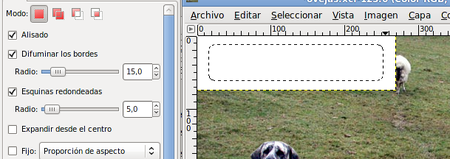
- Si haces clic con el botón derecho sobre la imagen y eliges Seleccionar --> Invertir, la parte seleccionada pasa a ser la exterior al rectángulo. Ahora con el botón derecho del ratón elige Editar --> Limpiar (Supr). La zona seleccionada queda borrada. Quita la selección (menú Seleccionar --> Ninguno) para poder seguir trabajando en la imagen. El resultado puedes observarlo a continuación. Guarda el trabajo.
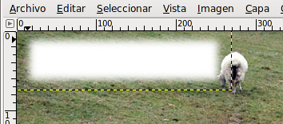
- Duplica la última capa creada, se llamará "Fondo texto 2". Ahora utilizarás una de las dos capas para poner encima un texto. Colorea una de ellas de color amarillo claro, por ejemplo, "Fondo texto 2". Selecciona la capa y haz clic en Bloquear transparencia, lo que te permitirá manchar de color todo el contenido de la capa que no sea totalmente transparente.
Recuerda donde está el botón Bloquear transparencia

- Selecciona el color de primer plano haciendo clic en
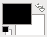
y elige el valor hexadecimal e8f963. Coge el pincel de la Caja de herramientas y pinta sobre la capa. Guarda el trabajo. - Poner guías. Para tener un mayor control sobre los elementos que forman parte de la imagen vas a añadir unas Líneas Guías. Recuerda que debes hacer clic sobre la regla vertical u horizontal y arrastrar hasta colocar la Línea Guía en su posición.
- Coloca dos Guías horizontales en las posiciones 135 y 340; y otras dos verticales en los píxeles 20 y 580. Puedes orientarte por las coordenadas que va mostrando la barra de estado de la Ventana imagen. Si encuentras muchas dificultades para colocar las guías de esta forma, recuerda que puedes colocar guías accediendo al menú Imagen --> Guías --> Guía nueva.
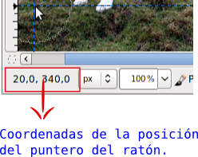
- Mueve la capa "Fondo texto 2" a la línea guía más baja, encajándola entre las dos líneas guías, y la capa "Fondo texto 1" a la más alta, también encajándola. Guarda el trabajo.
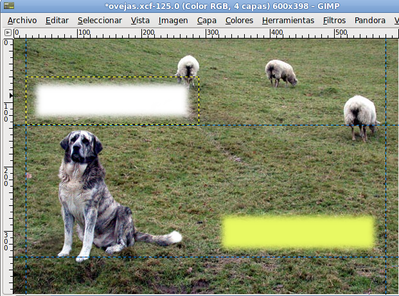
- Transparencia de las capas. Vas a dotar de transparencia a estas dos capas, dado que van a ser el fondo del texto que añadiremos a continuación. De esta forma parecerán más integradas en la imagen y no un pegote sobre ella. Selecciona cada una de las capas en la Ventana capas y coloca un valor de 60 en Opacidad a cada una de ellas.
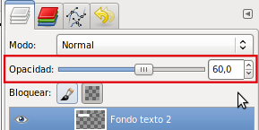
- Ahora coloca el texto. Recuerda que tienes dos imágenes, "texto1.xcf" y "texto2.xcf", abiertas en GIMP. Desde la Barra de tareas puedes acceder a ellas. Haz clic en la Ventana imagen del archivo "texto1.xcf" y desde la Ventana capas arrastra la capa "Texto" a la Ventana imagen del archivo "ovejas.xcf". Libera el ratón y tienes una nueva capa que se autodenomina "Texto", cambia el nombre a "Texto1". Luego haz lo mismo con la otra imagen "texto2.xcf", arrastra la capa "Texto" y en la imagen compuesta llámala "Texto2".

- Coloca ahora cada uno de los textos encima de las capas correspondientes. Como el texto ocupa un mayor espacio que el fondo, tienes que aumentar el tamaño de las capas "Fondo texto 1" y "Fondo texto 2". Selecciona la primera de ellas, haz clic con el botón derecho sobre ella y elige Escalar capa. Cambia su ancho por 300 píxeles. Haz lo mismo con la otra capa, en este caso pon 390 de ancho, pero desmarcando la Relación 1:1 para que se mantengan los 75 píxeles originales de altura. Si las capas quedan fuera de las guías vuelve a colocarlas en ellas.

- Debes alinear las capas del fondo con cada una de las capas de texto. Deja sólo visibles las capas "Texto2" y "Fondo texto 2". En la Caja de herramientas elige la herramienta Alineación.

- En la Ventana Capas, haz activa la capa "Fondo texto 2". Accede a la Ventana Imagen y haz clic en la capa "Fondo texto 2"; presiona la tecla Mayús y sin soltar esta tecla, haz clic sobre la capa "Texto2" en la Ventana imagen.

- Están seleccionadas, para su alineación, las dos capas que van a componer este título. Ahora debes fijar en las Opciones de la herramienta Alineación, bajo la Caja de herramientas, las siguientes opciones.

- Para alinear las capas seleccionadas primero debemos hacer clic en el botón de alineación sombreado en verde y, después, en el botón de alineación sombreado en rojo. Tras ese proceso las dos capas deben quedar situadas como se muestra en la siguiente imagen.

- Para evitar que se muevan accidentalmente estas dos capas y pierdan la alineación, debes enlazarlas.
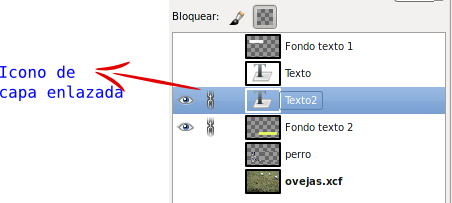
Haz clic en la zona donde se ve el eslabón de la cadena (normalmente no es visible el eslabón) y consigues que las dos capas queden enlazadas y que puedas aplicar sobre ellas algunas herramientas, por ejemplo Mover.
Guarda el trabajo.
- Combina estas dos capas visibles para formar una sola y que no puedan modificarse.
- Repite el proceso para las otras dos capas que forman el otro texto. Alinea y combina las otras dos capas. Ahora la Ventana Capas tendrá este aspecto.
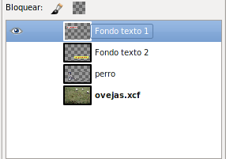
- Haz visibles todas las capas y guarda en el formato nativo de GIMP el trabajo.
- Para concluir debes Aplanar la imagen y exportarla en formato JPG, aceptando todas las opciones que vienen por defecto.Dado que existe una vista previa de la imagen a guardar, puedes ir cambiando las distintas características de Exportar como JPEG para comprobarlo.
Referencias¶
- Guía Gimp 2.10